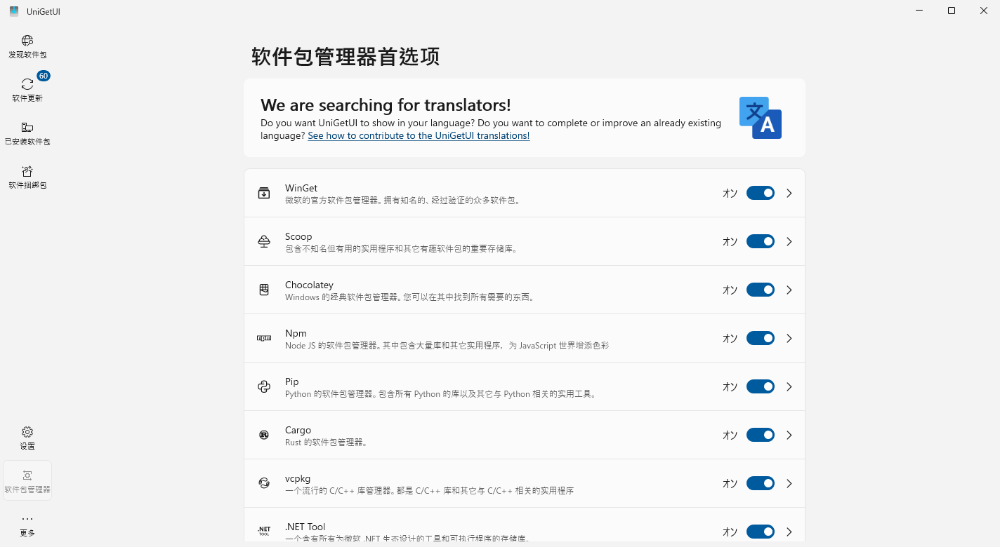

Table of Contents
1. DONE About
4chan user, old school player, child educator and a man doing hacker. Studying Master program in Cyberspace Security from Jinan University. Proud of my jack of all trades, surely master of none but still proud.
1.1. Professional Skill
- Maybe make things with AI category
- Programming: Python, javascript
- Software: Emacs, Latex
- "Skill issue" category
- Programming: C, C++, bash, Lisp
- Software: Docker, Git
- Learn X in Y minutes category
- Programming: Java, Go, Rust
- Framework: React
Other techs I've learned:
- GNU/Linux Distro, install and usage. InstallGentoo for 3 times and do LFS walkthrough one time. Also has experience with FreeBSD and Hackintosh, etc. Obsessed with notebook All in One in my college life.
- Vim and Emacs, the God of Editor and the Editor of God. I use them for writing org mode, also this blog.
- PL Theory and Proof Assistant. AKA Lean4.
- Music Production.
- Private Tracker.
1.2. Hobbyist
- Language
- Mandarin (Native Speaker); Output Simplified Chinese, Can read Traditional Chinese fluently; Cantonese (Just for fun).
- English (B2+ by passing CET-6 with 570 point), also watch English TV operas.
- Japanese (
B2 by passing JLPT N1B1 by N1 89 points which still failed :-( ) - Learning French, Korean and Russian, still at alphabet. Seriously it takes time and effort.
- Another major course
- Medical: anatomy
- Law: legal theory
- Entertainment
1.3. Battlestation Now
Dell G15 with RTX 3060 Laptop, Windows 10 IoT LTSC. Connected with 27-inch 4K monitor, KEMOVE K61 mechanical keyboard, and XBox Controller for gaming.
Still a desktop is preferred, so that my 16TB HDD can directly put in. (2025.8.20)
2. DONE Search
layout = "search"
summary = "search"
placeholder = "进行搜索……"
3. DONE 文章归档
4. TODO template
5. DONE “九大艺术”
6. DONE 男性秃头，发质细软塌的对策 med
理性讨论，文章内容不代表本人（
6.1. 引子
男生发型不好，可以剪可以染烫，但是头发没了就真的没办法了。不重视发型是大多国男的缺憾之一。 如果头发打湿后肉眼可见头皮，则头发肯定是太过细软了，是脱发的前兆。 细软发质本就显得头发稀少，根本留不了发型，脱发后更是对二十岁的人打击甚大。
发质细软乃至秃顶，细软可能是发质天生如此， 也可能是头发毛囊逐渐退化而闭合，生发的能力越来越弱。 毛囊闭合是不可逆的，这种情况只好植发。 而更多人正是在出现脱发时才注意到要保护头发，可惜为时已晚。
目前证明有效的制止脱发，主要靠三样：
- 药片：非那雄胺(Finasteride)，或是度他雄胺(Dutasteride)
- 洗剂：米那地尔
- 洗发水：酮康唑
6.2. 非那雄胺·度他雄胺
雄激素性脱发[1]（androgenetic alopecia，AGA）[2]俗称早秃[3]，旧时误称脂溢性脱发， 是前额上部或头顶部头发逐渐稀少，最后头皮光滑或有少许细毛，有时合并皮脂溢出，多见于男性。
非那雄胺的原理是，压制双氢睾酮（DHT）的生成，减少其对毛囊的作用。 男性更易脱发，关键在于睾酮部分地(10%)转化为DHT， 而DHT主要起到第二性征发育的作用，过了青春期后只能产生让人毛囊收缩消失的后果。 非那雄胺是一种 5-alpha 还原酶(5ar)抑制剂，通过阻止 5-alpha 还原酶将睾酮转化为DHT实现减缓雄脱。 由此，非那雄胺更多是阻止继续掉发，或许能稍微恢复一点头发，也有些人的生发效果很好。
5ar 抑制剂对剂量不敏感，0.2mg 用量可以减少 68% 的DHT， 5mg 用量可以减少 72% 的DHT。 度他雄胺的效果更强，0.5mg 用量可以减少 95% 的 DHT，但是会更贵一些。 度他雄胺的半衰期为8小时，每天吃一片，疗程三个月。
非那雄胺长期用于治疗前列腺增生，对人的副作用与效果已经被研究得很明白了， 我的外公也吃非那雄胺，他是治前列腺不行，老人漏尿的。 但有1-2%的可能性会导致ED。说实话对于 可以通过减少摄入药物等来避免。保法止1mg 足以起到防脱发作用。
6.3. 米那地尔
米那地尔(Minoxidil)通过打开钾离子通道，扩张头顶毛囊血管从而刺激毛发生长期。 米那地尔配合非那雄胺来恢复头发，在脱发早期（NW2期之前）最有效果。
6.4. 酮康唑
6.5. 雌激素
抗雄激素：螺内酯(spirolactone) 通过抑止睾酮，从而抑止DHT。 雌激素：戊酸雌二醇，用于补充雌激素，防止性激素紊乱。
注意这些药用于男性转女性的激素替代疗法，比5ar抑制剂更加容易导致性功能问题。 但是，的确有人为了有女性一样的发质而吃抗雄激素与雌激素。
7. DONE Windows 资源汇总 windows
7.1. Windows / Office 激活
打开 Windows Powershell 然后执行：
irm https://get.activated.win | iex
使用 HWID 激活 Windows，使用 Ohook 激活 Office。
7.2. 下载 Windows/Office
Win10 Enterprise IoT LTSC 2021 is all you need.
- 🉑安全更新到2032年，让微软多修几年Win11。
对比：企业LTSC版支持到2027年，企业物联网LTSC版又多五年支持 - 没有多余应用，等同于精简版；
预安装Edge浏览器和Win32系统应用。 - 与LTSC在二进制水平上完全相同，除了没有 MS Store。
下载MS Store：wsreset -i。 或者，安装winget和scoop管理一切。 - 可手动安装安全更新
Win11 Enterprise IoT LTSC 2024
- 与 Win10 IoT LTSC 很像
- 使用 React Native 重写 UI (???)
- 这个 Intel 12 代以上的大小核调度 是不是非要不可，然后可以考虑这一版
- 否则就等着 IoT LTSC 2027 吧
其他Win10/Win11 家庭版/专业版/教育版/企业版/企业版IoT
- 预安装Edge, Win32系统应用，MS Store，OneDrive, 天气，电影，音乐，Candy Crush，等等
- 特性更新时自动更新应用
- 仅1.5~3年支持
- 强制更新
Office 版本
Microsoft 365 优于 Office 2024，因为它包含只有 365 才提供的以下功能。 - PowerPoint 中的设计器 - Word 中的 Microsoft 编辑器 - Excel 中的最新公式 - 高级字体和图标 - 辅助功能增强 Microsoft 365 会定期接收更新，所有应用程序都会获得新功能和改进。相比之下，Office 2024 仅接收安全更新，没有新增功能。 -- Massgrave
7.3. Windows 软件管理 in 2025
从 WinXP 时野蛮生长的软件安装， 目前已经产生了安装速度、安全来源与可复现构建等多方面的困扰。 Linux 比 Windows 好就好在有一个包管理器， 而坑也就坑在不同发行版都有自己的包管理器。 好在现在 Windows 的可用包管理器与 Win10 和 Powershell 结合得很好，
- Chocolatey 是Windows 的经典软件包管理器。您可以在其中找到所有需要的东西。
- Scoop 包含不知名但有用的实用程序和其它有趣软件包的重要存储库。
- Winget 是微软的官方软件包管理器。拥有知名的、经过验证的众多软件包。
UniGetUI则是包管理器的 UI 界面，个人感觉等于把包管理器大一统了……

建议 UniGetUI 多用吧。
7.4. Windows 软件推荐
7.5. Office 教程
很多 Office 的知识点是面向计算机二级的； 非科班的玩不来电脑，计算机科班的又不考计算机二级。 但是计算级二级水平的 Office 知识对计算机科班而言同样必要， 这样至少不会因为玩不来 Word 排版而选择梭哈 \(\LaTeX\) ， 反过来歧视 Word 怎样地劳心费力，不如 \(\LaTeX\) 一根。
推荐（付费视频）教程：向天歌的PPT/Excel/Word大神上分攻略。
配套电子书教材：PPT之光/Excel之光/Word之光。
我曾拜读过 Oeasy 老师的教程，现在就感觉这玩意还是太老了且缺乏体系， 拿出来个系统是 Windows Vista，Office 2007。 虽然我也曾认为 Office 2003 是 Golden Standard， 可能只是因为与 WinXP 和华军软件园更搭配。
举例如 Word 教程的一些我认为有必要学习的知识点：
- 样式 作为结构化排版的基础
- 尾注 ， 页眉页脚 ， 表格 都是写作论文的细节
- 查找与替换 ，大家都很熟悉正则表达式吧，Word 也有这种东西
- 邮件合并 虽然听上去很没用，但也是计算机二级的考点，还有一些妙用
8. TODO Emacs, Hugo, Codex：2025年搭建个人博客的三位一体 emacs hugo ai
我看 Emacs-Hugo + Codex 搞得不错，静态网页生态极大丰富，迁移困难基本消灭，网站风格、程序员审美也受重视， 如果加上我的雄文，这就是我理想中的博客站点[21]。
我大一大二(2021年)时就开始研究搭建个人博客与md， 当时使用基于Hexo的博客工具，连命令行与npm都玩不转，部署起来十分痛苦。 现在过了四年，略通一点博客的搭建思路，分享出来，让更多人不走弯路。
这篇文章的目标用户？
主要是面向 Emacs 用户的一套搭建博客的技术栈—— Emacs 是在程序员中具有独特生态位的纯文本编辑器。 对于没有 Emacs 经验的读者，也可以阅读其中有关纯文本的讨论，然后使用 VSCode 或其他 Markdown 编辑器。
阅读方式
本文各部分没有很大关联，不需要按顺序阅读。对于在 Windows 上写博客的初学者，推荐阅读“基础”部分， 了解博客工具如何通过命令行运作。
8.1. 基础：Markdown，命令行，git，以及 VSCode
8.1.1. Markdown：最流行的纯文本格式
8.1.2. Windows 命令行解说
Linux 用户注释：这一段的“命令行”不止于 cmd.exe，相当于 shell 的中文名，两者可以通用。 实际上解释的是如何切换到 powershell 并准备好包管理器 scoop，从而下载 Hugo。
打开 powershell：在这一步后你应该看到
Windows PowerShell Copyright (C) Microsoft Corporation. All rights reserved. Try the new cross-platform PowerShell https://aka.ms/pscore6 PS C:\Users\pilrymage>
搜索框或 Win+R 键调出。
下载 scoop。如官网所说
Set-ExecutionPolicy -ExecutionPolicy RemoteSigned -Scope CurrentUser Invoke-RestMethod -Uri https://get.scoop.sh | Invoke-Expression